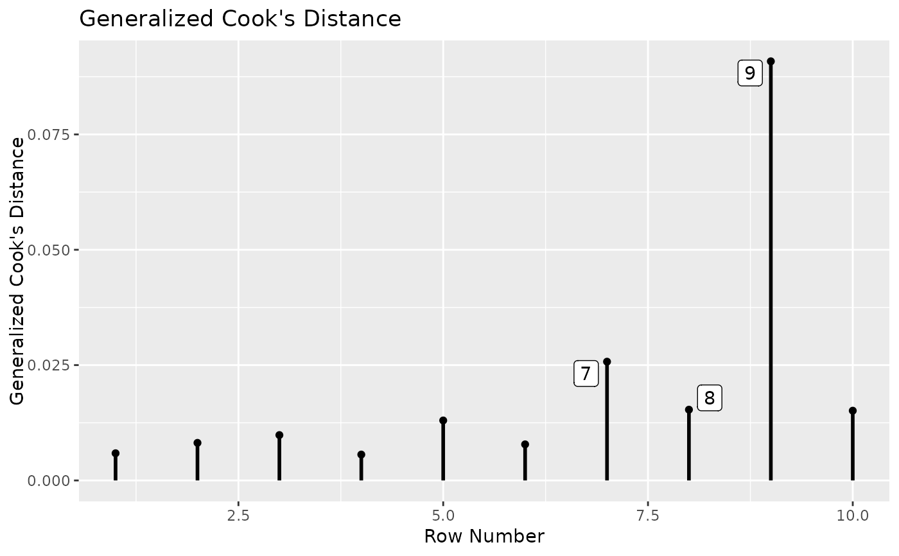
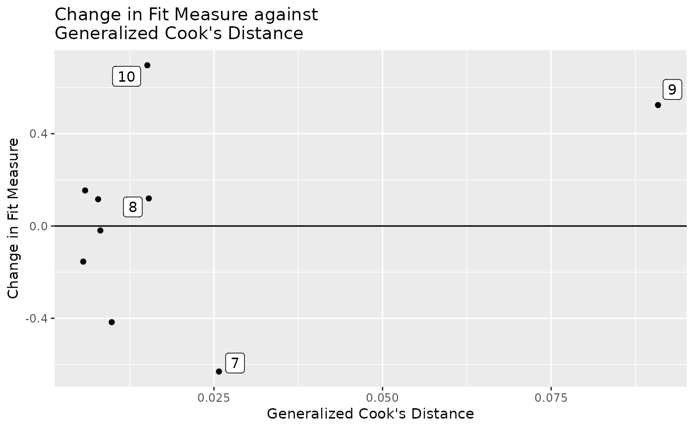
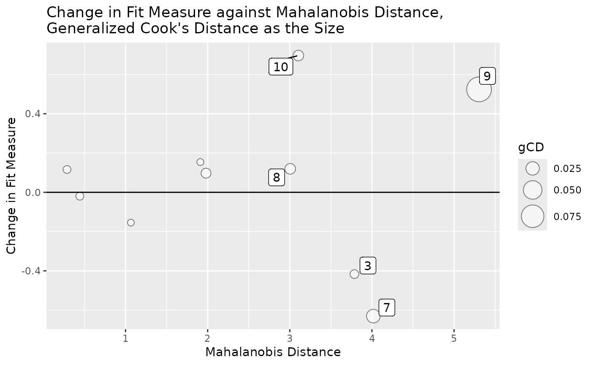

Plot selected influence statistics and measures of extremeness
Source:R/influence_plot.R
influence_plot.RdGet a influence_stat() output and plot selected statistics
gcd_plot(influence_out, cutoff_gcd = NULL, largest_gcd = 1) md_plot( influence_out, cutoff_md = FALSE, cutoff_md_qchisq = 0.975, largest_md = 1 ) gcd_gof_plot( influence_out, fit_measure, cutoff_gcd = NULL, cutoff_fit_measure = NULL, largest_gcd = 1, largest_fit_measure = 1 ) gcd_gof_md_plot( influence_out, fit_measure, cutoff_md = FALSE, cutoff_fit_measure = NULL, circle_size = 2, cutoff_md_qchisq = 0.975, cutoff_gcd = NULL, largest_gcd = 1, largest_md = 1, largest_fit_measure = 1 )
Arguments
| influence_out | The output from |
|---|---|
| cutoff_gcd | Cases with generalized Cook's distance larger than this
value will be labeled. Default is |
| largest_gcd | The number of cases with the largest generalized Cook's distance to be labelled. Default is 1. If not an integer, it will be rounded to the nearest integer. |
| cutoff_md | Cases with Mahalanobis distance larger than this value
will be labeled. If it is |
| cutoff_md_qchisq | This value multiplied by 100 is the percentile to be used for labeling case based on Mahalanobis distance. Default is .975. |
| largest_md | The number of cases with the largest Mahalanobis distance to be labelled. Default is 1. If not an integer, it will be rounded to the nearest integer. |
| fit_measure | Specify the fit measure to be used in a plot. Use the
name
in the |
| cutoff_fit_measure | Cases with |
| largest_fit_measure | The number of cases with the largest selected fit measure change in magnitude to be labelled. Default is 1. If not an integer, it will be rounded to the nearest integer. |
| circle_size | The size of the largest circle when the size of a circle is controlled by a statistic. |
Value
A ggplot2 plot. It will not be plotted. To plot it, use plot() on
the output.
Details
The output of influence_stat() is simply a matrix. Therefore, this
function will work for any matrix provided.
Row number will be used on the x-axis if applicable. However, case
identification
values in the output from influence_stat() will be used for labeling
individual cases.
References
Pek, J., & MacCallum, R. (2011). Sensitivity analysis in structural equation models: Cases and their influence. Multivariate Behavioral Research, 46(2), 202-228. https://doi.org/10.1080/00273171.2011.561068
See also
Author
S. F. Cheung (shufai.cheung@gmail.com)
Examples
library(lavaan) dat <- pa_dat # For illustration only, select only the first 50 cases dat <- dat[1:50, ] # The model mod <- " m1 ~ iv1 + iv2 dv ~ m1 " # Fit the model fit <- lavaan::sem(mod, dat) summary(fit)#> lavaan 0.6-9 ended normally after 13 iterations #> #> Estimator ML #> Optimization method NLMINB #> Number of model parameters 5 #> #> Number of observations 50 #> #> Model Test User Model: #> #> Test statistic 1.768 #> Degrees of freedom 2 #> P-value (Chi-square) 0.413 #> #> Parameter Estimates: #> #> Standard errors Standard #> Information Expected #> Information saturated (h1) model Structured #> #> Regressions: #> Estimate Std.Err z-value P(>|z|) #> m1 ~ #> iv1 -0.159 0.166 -0.954 0.340 #> iv2 0.525 0.162 3.241 0.001 #> dv ~ #> m1 0.350 0.161 2.169 0.030 #> #> Variances: #> Estimate Std.Err z-value P(>|z|) #> .m1 0.901 0.180 5.000 0.000 #> .dv 1.423 0.285 5.000 0.000 #># Fit the model n times. Each time with one case removed. fit_rerun <- lavaan_rerun(fit, parallel = FALSE)#> #>#> chisq cfi rmsea tli m1~iv1 m1~iv2 dv~m1 #> 1 0.364966775 0 0 -0.089423524 0.055155120 -6.413054e-02 0.07360975 #> 2 0.002466591 0 0 -0.001853612 0.012022425 3.317406e-03 -0.00827550 #> 3 -0.025206945 0 0 0.004202146 0.001313708 1.480761e-03 -0.02394497 #> 4 -0.035970625 0 0 0.006676175 -0.031966016 3.702928e-03 0.03357168 #> 5 0.110992116 0 0 -0.028824532 0.116998821 2.621972e-02 0.06726178 #> 6 0.086695524 0 0 -0.022536563 0.006980969 -9.042076e-06 0.01103398 #> m1~~m1 dv~~dv gcd md #> 1 -0.04407445 0.06267652 0.01722389 2.2538385 #> 2 -0.09328821 -0.09338479 0.01767104 0.2927790 #> 3 -0.09898699 -0.08413154 0.01745465 3.0251076 #> 4 -0.07952396 -0.07133612 0.01357011 0.7810530 #> 5 0.15520004 -0.08842656 0.05271526 2.7091742 #> 6 -0.09666780 -0.06204820 0.01336721 0.4390106# Plot generalized Cook's distance. Label the 3 cases with largest distances. gcd_plot(out, largest_gcd = 3)# Plot Mahalanobis distance. Label the 3 cases with largest distances. md_plot(out, largest_md = 3)# Plot changes in model chi-square against generalized Cook's distance. # Label the 3 cases largest changes in magnitude. # Label the 3 cases with largest generalized Cook's distance. gcd_gof_plot(out, fit_measure = "chisq", largest_gcd = 3, largest_fit_measure = 3)# Plot changes in model chi-square against Mahalanobis distance. # Size of bubble determined by generalized Cook's distance. # Label the 3 cases largest changes in magnitude. # Label the 3 cases with largest Mahalanobis distance. # Label the 3 cases with largest generalized Cook's distance. # gcd_gof_md_plot(out, fit_measure = "chisq", largest_gcd = 3, largest_fit_measure = 3, largest_md = 3, circle_size = 10)